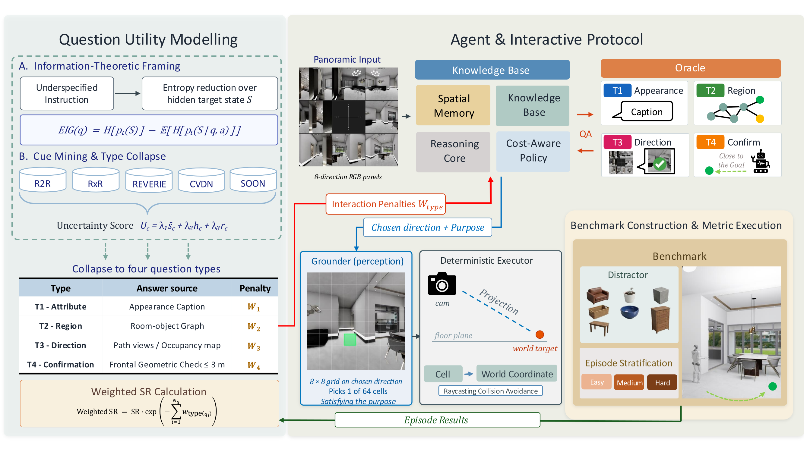
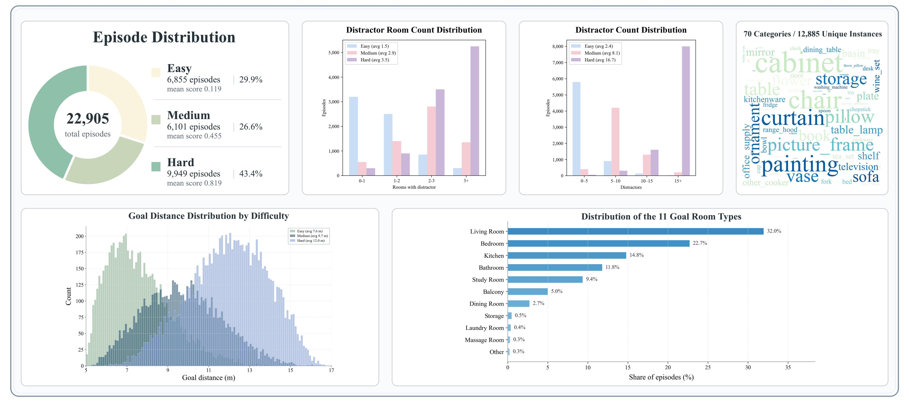
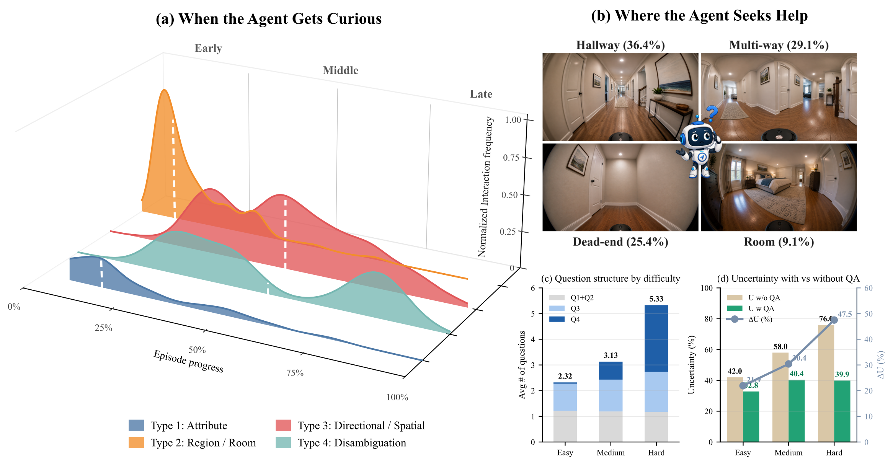
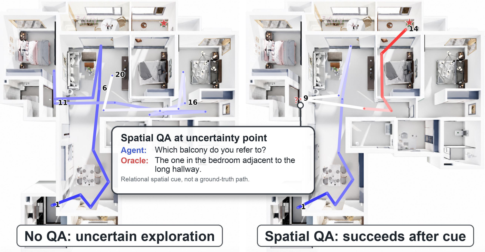
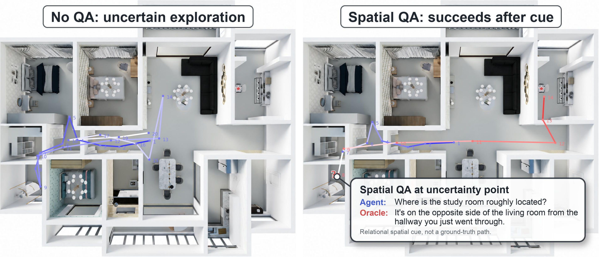

Reframing
Cost-sensitive
Interactive IGN becomes uncertainty reduction per unit cost, not raw success at any number of queries.
We recast interactive Instance Goal Navigation as cost-sensitive uncertainty reduction: an agent should ask the question whose answer reduces the most navigation uncertainty relative to its cost. We contribute a data-derived question taxonomy, a Weighted Success Rate benchmark, and TANDEM, a modular zero-shot MLLM navigator.
1Adelaide University · 2Responsible AI Research Centre, Australian Institute for Machine Learning · 3Institute for Infocomm Research (I²R), A*STAR · 4iMotion · 5CSIRO Data61
* Equal contribution. † Corresponding author.
Overview
A household robot asked to "bring me the cup" faces uncertain room boundaries, several same-category instances, and routes to different valid-looking candidates. Talking to an oracle disambiguates — but only if the agent asks the right question at the right price.
Interactive IGN becomes uncertainty reduction per unit cost, not raw success at any number of queries.
Appearance, region, route, and confirmation — with penalties mined from human navigation corpora.
An Isaac Sim benchmark with grounded typed oracles and a metric that discounts success by query cost.
A modular zero-shot navigator that separates planning, grounding, metric execution, and cost-aware asking.
The Problem
Prior interactive navigation lets agents query an oracle, but the space of questions is hand-designed and the cost of asking is absent or uniform. Under cost-agnostic evaluation, an agent can lift Success Rate just by repeatedly asking high-information route questions — raw SR cannot separate efficient disambiguation from heavy oracle use.
We model the hidden target state S and value a candidate question q by its expected information gain — how much it shrinks the agent's uncertainty about the target. The agent should prefer questions that reduce uncertainty substantially relative to their cost.
The posterior over real targets in real scenes is unobservable, so we use heterogeneous human-authored navigation corpora (R2R, REVERIE, RxR, CVDN, SOON) as an empirical proxy for which linguistic cues typically reduce target and spatial ambiguity — yielding a reproducible, data-derived prior for pricing each question type.
Expected information gain: prior entropy over the target minus the entropy expected after receiving answer a. Ask when this gain outweighs the question's price.
Question Taxonomy
Mined cues are grouped by answer semantics into four interaction-level question types. Each cue's utility combines its average importance, its high-gain fraction, and how often it ranks first; these are rescaled into locked per-type penalties wt. More informative types cost more and are discounted harder when measuring autonomous navigation.
Reduces uncertainty over target identity among same-category instances.
Reduces uncertainty over the room or region to search.
Reduces uncertainty over the branch, corridor, or layout direction to follow. The most informative — and the priciest.
Verifies whether a visible candidate is the target. Cheapest, since it only checks one hypothesis.
Method · TANDEM
TANDEM decomposes interactive IGN into cost-aware semantic planning, visual grounding, constrained oracle interaction, and deterministic metric execution — keeping the MLLM's role qualitative and the metric quantities auditable.

A Navigator MLLM reasons over the 8-view panorama, goal, history, question budget, Fact Base, and Spatial Memory, then emits one decision: ASK, MOVE, or STOP — never raw metric state.
A Grounder maps the chosen direction and place-based subgoal to a single cell on an 8×8 floor-plane grid within the selected 90° view.
A deterministic executor back-projects the cell to a world-frame waypoint, casts forward rays for collisions, and writes blocked directions into Spatial Memory.
At every Planner call the agent sees the remaining budget, the relative penalties of the four types, the Fact Base, and Spatial Memory. If it asks, no movement happens that step; the controller charges the type's penalty and stores the answer for later calls, so duplicate or low-value questions compete against information already resolved.
Type 1 uses a sanitized appearance description; Type 2 uses the room-object graph; Type 3 summarizes a front-view route clip and occupancy metadata as a natural-language hint — but never coordinates, headings, or step counts; Type 4 verifies a visible candidate within 3 m. Interaction informs, it does not hand off navigation.
Benchmark
Built in Isaac Sim from USD scenes with a consistent object–room–pose–relation graph. Each episode gives a coarse goal such as "Find a laptop" and asks the agent to identify the intended instance among same-category distractors — without any human route trajectory.

Weighted Success Rate: a successful episode is discounted by the accumulated per-type query costs. Repeated questions are charged repeatedly; a successful no-question episode reduces to plain success; failures score zero.
Results
All methods share the same simulator, observation interface, oracle protocol, and scoring rule, with Qwen3.5-8B as the default backbone. TANDEM reaches 35.3 SR@1.5 and 21.4 Weighted SR, beating the next-best prior agent by 9.3 SR points.
| Agent / Variant | SR@1.5 | OSR@1.5 | SR@0.5 | SR@3 | NE ↓ | |Q| | WSR@1.5 | WSR@3 |
|---|---|---|---|---|---|---|---|---|
| Naive QA baselines (unconstrained interaction) | ||||||||
| GTA | 26.7 | 39.3 | 8.8 | 50.6 | 3.49 | 8.25 | 6.4 | 12.2 |
| COIN | 18.6 | 29.2 | 5.9 | 36.8 | 4.63 | 9.06 | 3.7 | 7.3 |
| MapGPT | 15.9 | 28.3 | 6.7 | 32.6 | 4.89 | 8.87 | 3.6 | 7.1 |
| NavGPT | 14.8 | 24.6 | 5.1 | 28.9 | 5.23 | 9.02 | 3.1 | 6.1 |
| Cost-aware QA protocol (ours) | ||||||||
| GTA | 26.0 | 38.6 | 10.5 | 49.3 | 3.55 | 3.44 | 15.9 | 30.3 |
| MapGPT | 16.5 | 27.6 | 6.6 | 31.5 | 4.97 | 3.28 | 10.2 | 19.4 |
| NavGPT | 14.3 | 24.1 | 5.8 | 27.8 | 5.31 | 3.21 | 8.9 | 16.9 |
| COIN | 13.0 | 22.0 | 2.0 | 27.4 | 5.20 | 2.61 | 9.2 | 19.3 |
| TANDEM | 35.3 | 50.0 | 14.2 | 66.5 | 2.68 | 3.57 | 21.4 | 40.8 |
| — w/o Spatial Memory | 28.0 | 43.5 | 8.8 | 57.8 | 3.15 | 3.01 | 18.5 | 36.0 |
| — w/o QA | 20.0 | 34.0 | 3.2 | 49.2 | 3.35 | — | 14.2 | 34.2 |
| — w/o Spatial Memory & QA | 14.0 | 25.0 | 1.5 | 34.2 | 5.15 | — | 10.0 | 23.8 |
Overall metrics on the 500-episode evaluation subset, Qwen3.5-8B Navigator. Naive QA lets agents ask freely (large |Q|, low WSR); the cost-aware protocol regulates query cost while improving success. Teal marks the best value per column.
| Navigator Backbone | SR@1.5 | OSR@1.5 | SR@3 | NE ↓ | TL | WSR@1.5 | WSR@3 |
|---|---|---|---|---|---|---|---|
| Closed-source MLLMs | |||||||
| GPT-5.4 | 41.6 | 56.4 | 74.8 | 2.21 | 23.21 | 25.0 | 45.3 |
| Gemini3-Flash | 41.1 | 59.4 | 73.7 | 2.18 | 19.35 | 23.8 | 44.5 |
| Open-source MLLMs | |||||||
| Qwen3.5-8B (default) | 35.3 | 50.0 | 66.5 | 2.68 | 23.87 | 21.4 | 40.7 |
| Qwen3-VL-4B | 23.9 | 39.8 | 51.8 | 2.97 | 24.32 | 17.7 | 37.4 |
| Qwen3.5-4B | 22.0 | 37.9 | 47.2 | 3.21 | 24.72 | 13.4 | 29.5 |
| Gemma-e4B | 19.3 | 34.2 | 41.4 | 3.59 | 25.36 | 12.0 | 26.2 |
| InternVL3.5-4B | 17.8 | 31.8 | 38.2 | 3.80 | 25.71 | 11.2 | 24.4 |
Performance scales with backbone strength on both SR and Weighted SR — stronger Navigators improve through better navigation, not through extra querying.
| Method | CVDN (GP ↑) | SOON (Val unseen) | REVERIE (Val unseen) | |||
|---|---|---|---|---|---|---|
| Val | Test | SR ↑ | SPL ↑ | SR ↑ | SPL ↑ | |
| HAMT | 5.13 | 5.58 | — | — | 33.0 | 30.2 |
| DUET | — | — | 36.3 | 22.6 | 47.0 | 33.7 |
| AutoVLN | — | — | 41.0 | 30.7 | 55.9 | 40.9 |
| GOAT | — | — | 40.4 | 28.1 | 53.4 | 36.7 |
| ScaleVLN | 6.12 | 6.97 | — | — | 57.0 | 41.8 |
| NaviLLM | 6.16 | 7.90 | 38.3 | 29.2 | 42.2 | 35.7 |
| SAME | 6.94 | 7.07 | 36.1 | 25.4 | 46.4 | 36.1 |
| TANDEM | 8.15 | 8.50 | 45.2 | 33.5 | 62.4 | 45.6 |
A transfer check on discrete-environment benchmarks. Despite substantial differences in instructions, splits, and protocols, TANDEM consistently improves the held-out metrics.
The Aha Moment
Beyond whether asking helps, the benchmark lets us see how interaction reduces uncertainty: the temporal distribution of question types, the physical contexts of Type-3 spatial questions, and how much search space each answer removes.

Appearance (Type 1) and region (Type 2) cluster in the first 30–40% of an episode, grounding target identity and goal region before committing to a path. Confirmation (Type 4) is bimodal, peaking near 80%.
Type-3 questions concentrate at long corridors, multi-way junctions, and dead-ends — only 7% occur in closed rooms. 65% ask about the goal room's position, 25% about room relations, just 10% are raw route requests.
Average questions rise from 2.32 (easy) to 5.33 (hard), driven by Type 4 (0.05→2.60). A Type-3 answer compresses the explored search area most when layout ambiguity is highest.
Case Studies
Paired episodes where full TANDEM succeeds while the no-QA ablation fails under the same start and target. The oracle returns a natural-language route hint — never coordinates — so the gain refines the agent's coarse spatial prior rather than outsourcing navigation.


Cite
arXiv identifier to be added on release.
@article{zhao2026askwhenitpays,
title = {Ask When It Pays: Cost-Aware Open-Ended Interaction for Instance Goal Navigation},
author = {Zhao, Xunyi and Lin, Sihao and Zhou, Gengze and Li, Zerui and
Li, Shijie and Tao, Wei and Liu, Jiajun and Wu, Qi},
journal = {arXiv preprint},
year = {2026}
}